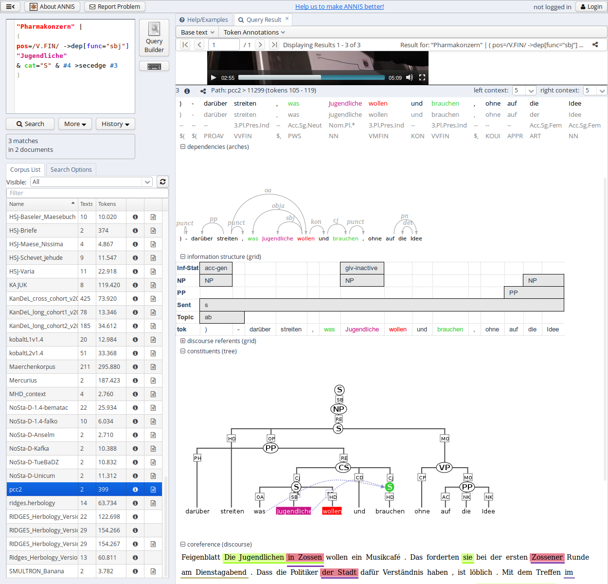
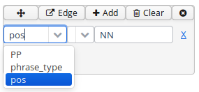
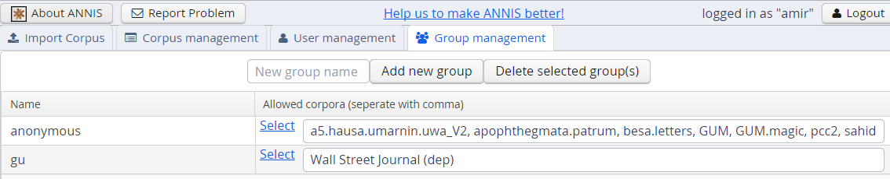
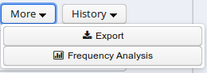
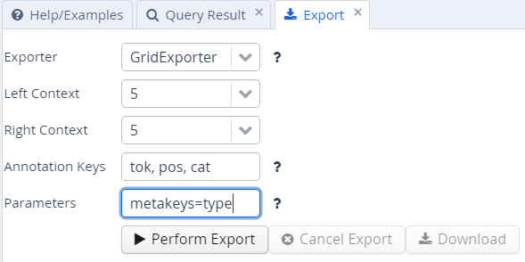
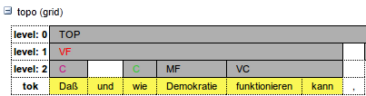
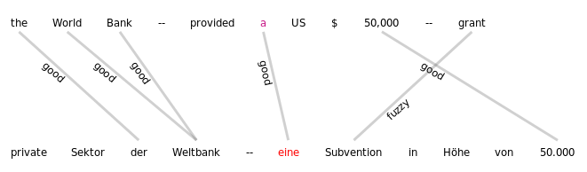
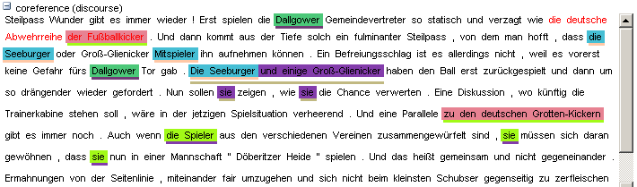
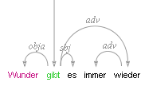
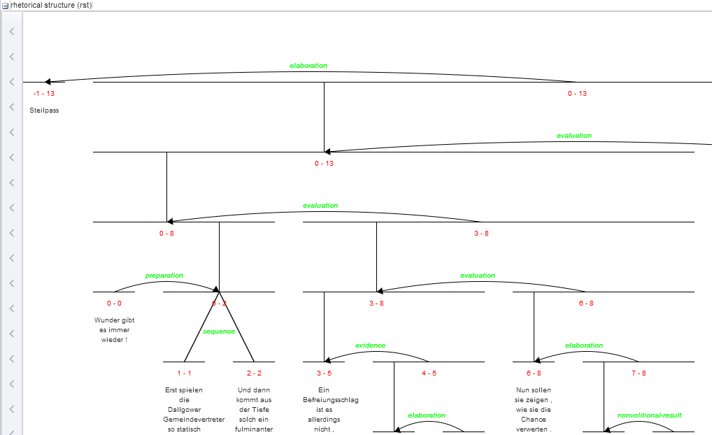

Introduction
ANNIS is an open source, browser-based search and visualization architecture for multi-layer corpora, developed at Humboldt-Universität zu Berlin, Georgetown University and Potsdam University. It can be used to search for complex graph structures of annotated nodes and edges forming a variety of linguistic structures, such as constituent or dependency syntax trees, coreference, rhetorical structure and parallel alignment edges, span annotations and associated multi-modal data (audio/video).

This user guide provides an overview of the current ANNIS system, first steps for installing either a local instance or an ANNIS server with a demo corpus, as well as tutorials for converting data for ANNIS and running queries with AQL (ANNIS Query Language).
Installation
There are two editions of ANNIS, one for the local use on a standard computer (ANNIS Desktop) and one which is only needed when running a web-server. Both versions require the Installation of Java OpenJDK 11. If your operating system does not already include Java, we recommend the installation of the open-source and free of charge installers provided at https://adoptium.net/.
Installing a Local Version (ANNIS Desktop)
Local users who do not wish to make their corpora available online can install ANNIS Desktop under most versions of Linux, Windows and MacOS. To install ANNIS follow these steps:
- Download and the ANNIS Desktop JAR-file from the ANNIS website.
- Double-click on downloaded JAR-file to start it.
On Windows, at this point your Firewall may try to block ANNIS and offer you to unblock it — do so and ANNIS should start up.
If double clicking does not work, you might need to start ANNIS from a terminal.
Open your system terminal and navigate to the directory where the JAR-file is located, e.g.
/Users/myself/Documentsand directly start the JAR-file with java:
You have to replacecd /Users/myself/Documents java -jar annis-gui-<version>-desktop.jar<version>with the version of ANNIS you are using. - A browser window with the address http://localhost:5712 should open automatically, if not you can click on the button in the ANNIS Desktop window.
Test the installation is working
- Download and the GUM demo corpus from the ANNIS website: http://corpus-tools.org/annis/corpora.html.
- Click on the “Administration” button and select the “Import Corpus” tab.
- Click on “Upload ZIP file with corpus“ and select the downloaded ZIP file
- Once import is complete, click on the “Search interface” to get back to the search interface and test the corpus (click
on one of the example queries displayed on the screen, or try selecting the
GUM corpus, typing
pos="NN"in the AQL box at the top left and clicking “Show Result”. See the sections “Using the ANNIS interface”and “ANNIS Query Language (AQL)” in this guide for some more example queries, or press the Tutorial button in the Help/Examples tab of the interface for more information).
Installing an ANNIS Server
The ANNIS server version can be installed most versions of Linux, Windows and MacOS but we will focus on Linux based servers in this documentation. To install the ANNIS server:
- Download and the ANNIS Server JAR-file from the ANNIS website. We assume you are saving it under
/usr/local/binbut you can choose any other location. - Open your system terminal and execute the JAR-file:
You have to replace/usr/local/bin/annis-gui-<version>-desktop.jar<version>with the version of ANNIS you are using.
This will start a REST service on port 5711 and the user interface on port 5712.
The user interface service will accept requests from all IPs and the embedded REST service only from localhost.
We recommend using a Nginx or Apache server as proxy for the user interface service for production to enable important features like HTTPS encryption.
Use systemd to run ANNIS as a service
You can create a simple systemd configuration file with the name annis.service and save it under one of the valid configuration folders, e.g. /etc/systemd/system to register ANNIS as a system service.
[Unit]
Description=ANNIS corpus search and visualization
[Service]
Type=simple
ExecStart=/usr/local/bin/annis-gui-<version>-desktop.jar
Environment=""
User=annis
Group=annis
WorkingDirectory=/usr/local
[Install]
WantedBy=multi-user.target
This configuration assumes that there is a “annis” user and group on the server.
You can permanently enable this service by calling
$ systemctl enable annis.service
Since ANNIS is a Spring Boot application, the other methods of running a Spring Boot application as service (described in their documentation) are also possible.
Migrating from ANNIS 3
These instructions are a guideline for upgrading the installation of ANNIS on a UNIX-like server. If you use the ANNIS Desktop version just download the new version and (re-) import the corpora you need. Please read the installation instructions first if you haven't done so yet.
It is currently not possible to migrate user accounts and groups automatically. You should however be able to import all existing corpora in the relANNIS format and migrate the reference links.
Download and install the new service
Follow the installation instructions to get the new service running. You should configure a new port for the ANNIS service if both old and new version run on the same server. The old service must still be available while migrating the reference links (but not after).
Import old corpora
You should export a list of all existing corpora from the old service and use the new ANNIS command line tool to import them again.
This can take a long time, so if you use SSH you might want use a program like e.g. Byobu to start a terminal that continues to run process in the background even if the connection is interrupted.
Migrate reference links
ANNIS aims to be as backward-compatible as possible, but we need to make sure the reference links actually point not only to the same queries and corpora, but show exactly the same result 1.
If you want to migrate the reference links, you have to export them as CSV files from ANNIS 3 using its command line interface.
annis-admin.sh dump url_shortener url_shortener.csv
You can select any output file in a location of your choice.
In the "Administration" user interface, there is a tab that allows to migrate reference links. To do so, ANNIS will execute each query in the given CSV file both on the old ANNIS service and on the new one. This is why you need to give the server URL and adminstration account information as parameters.

After filling out all necessary information and clicking on "Start migration", ANNIS will compare the results by executing the queries both on the old and the new ANNIS service. If both results are exactly the same, it migrates the reference link to the new system. The command will give a summary how many reference links have been migrated successfully and which kind of errors occurred on the other ones. If you think a specific query triggers a bug in the new version of ANNIS, please check if there is already a bug report on https://github.com/korpling/ANNIS/issues or open a new one.
Some queries only work in the same way in compatibility query mode, these will be rewritten automatically. The user will be able to execute this query normally, but sees a warning that its using deprecated functions of the query language.
For queries where both the normal and the compatibility mode don't return the same results, they are still migrated but a clear warning is shown to the user before execution, that this query is known to give different results compared to the previous version of ANNIS.
2 Same result means, that the overall count is correct, that the matches have the same Salt IDs and that they are presented in the same order.
Using the ANNIS interface
The ANNIS interface is comprised of several areas, the most important of which are the search form on the left side and the results tab on the right side.

Search Form

The Search Form can be found on the left of the interface window. It's bottom part shows the list of currently available corpora. By clicking on the line with the corpus name, it is possible to select which corpora should be searched in (hold down 'ctrl' to select multiple corpora simultaneously). You may also configure groups of corpora or type in the filter box to view subsets of the corpora.
The "AQL" field at the top of the form is used for inputting queries manually (see the tutorials on the ANNIS Query Language from the ANNIS website). As soon as one or several corpora are selected and a query is entered or modified, the query will be validated automatically and possible errors in the query syntax will be commented on in the "Status" box below (which says "valid query" in the image above).
Once a valid query has been entered, pressing the "Search" button will retrieve the number of matching positions and documents in the selected corpora in the Status box and open the Result tab to display the first set of matches.

In order to get more control over the search you can click on "Search Options" to unfold more detailed search options. The context surrounding the matching expressions in the result list ist determined by the "Left Context" and "Right Context" options and can be changed on each side (by default up to 20 tokens). You can also configure how many results are shown per page, what order results are shown in (ascending, descending or random) and for some corpora, you can select alternative segmentation layers to visualize data (relevant for languages with multiple tokens per word form, etc., such as Arabic). Entire texts can also be viewed using special document visualizations or by clicking on the document icon next to each corpus name, if available.
The "Query Language" option allows to switch between the default AQL dialect and an compatibility mode emulating the behavior of the older ANNIS3. Make sure to use the latest version for all new queries.
Result Window

The result window shows search results in pages of 10 hits each by default (this can be changed in the Search Form). The toolbar at the top of the window allows you to navigate between these pages. The "Token Annotations" button on the toolbar allows you to toggle the token based annotations, such as lemmas and parts-of-speech, on or off for you convenience. You can use hyperlinks to your queries by copying the current browser URL for e-mail or citation purposes, allowing others to reproduce your query.
If your corpus contains multiple alternative text layers or segmentations (e.g. normalized and un-normalized text), you may switch between these on the fly by using the "base text" menu.

The result list itself initially shows a KWIC (key word in context) concordance of matching positions in the selected corpora, with the matching regions marked in color and the context in black on either side. Colors in the result match the colors of search expressions in the search box (red for the search item #1, purple for #2, etc.).
Context can be adjusted for individual search results up to the maximum allowed for the current corpus. Token annotations are displayed in gray under each token, and hovering over them with the mouse will show the annotation name and namespace. More complex annotation levels can be expanded, if available, by clicking on the plus icon next to the level's name, e.g. dependencies and referent information for the annotations in the dependency tree and grid views in the picture below.
Query Builder
To open the graphical query builder, click on the Query Builder button. On the left-hand side of the toolbar at the top of the query builder canvans, you will see the Add Node button. Use this button to define nodes to be searched for (tokens, non-terminal nodes or annotations). Creating nodes and modifying them on the canvas will immediately update the AQL field in the Search Form with your query, though updating the query on the Search Form will not create a new graph in the Query Builder.

In each node you create you may click on  to specify an
annotation value. The annotation name can be typed in or selected from a drop down list once a corpus is
selected. The operator field in the middle allows you to choose between
an exact match (the '=' symbol) or wildcard search using Regular
Expressions (the '~' symbol). The annotation value is given on the
right, and should NOT be surrounded by quotations (see the example
below). It is also possible to specify multiple annotations applying to
the same position by clicking on
multiple times. Clicking on
will delete the values in the node. To search
for word forms, simply choose "tok" as the field name on the left. A
node with no data entered will match any node, that is an underspecified
token or non-terminal node or annotation.
to specify an
annotation value. The annotation name can be typed in or selected from a drop down list once a corpus is
selected. The operator field in the middle allows you to choose between
an exact match (the '=' symbol) or wildcard search using Regular
Expressions (the '~' symbol). The annotation value is given on the
right, and should NOT be surrounded by quotations (see the example
below). It is also possible to specify multiple annotations applying to
the same position by clicking on
multiple times. Clicking on
will delete the values in the node. To search
for word forms, simply choose "tok" as the field name on the left. A
node with no data entered will match any node, that is an underspecified
token or non-terminal node or annotation.

To specify the relationship between nodes, first click on the "Edge"
link at the top left of one node, and then click the "Dock" link which
becomes available on the other nodes. An edge will connect the nodes
with an extra box from which operators may be selected (see below). For
operators allowing additional labels (e.g. the dominance operator >
allows edge labels to be specified), you may type directly into the
edge's operator box, as in the example with a "func" label in the
image below. Note that the node clicked on first (where the "Edge"
button was clicked) will be the first node in the resulting quey, i.e.
if this is the first node it will dominate the second node (#1 > #2)
and not the other way around, as also represented by the arrows along
the edge.
Administration Interface
The administration interface allows you to import and delete corpora, as well as to define users from the ANNIS web application directly. To log into the administration interface, use the URL of you ANNIS web application and add /admin or press the Administration button next to ‘About ANNIS’ (this button is only shown if you are a logged in administrator or when using the desktop version). You should see the screen below:

Here you can upload a zipped relANNIS corpus for import and set the e-mail address in the configuration file. The corpus management tab allows you to select corpora for deletion:
And finally the user and group management tabs allow you to add or remove users, give them special permissions, and determine which groups can see which corpora.


These functions edit the files described in the User Configuration on Server section.
ANNIS Query Language (AQL)
ANNIS comes with its own query language called ANNIS Query Language (AQL). AQL is based on the concept of searching for annotation attributes and relations between them.
A search is formulated by defining each token, non-terminal node or annotation being searched for as an element. An element can be a token (simply text between quotes: "dogs" or else tok="dogs") or an attribute-value pair (such as tok="dogs", or optionally with a namespace: tiger:cat="PP"). Note that different corpora can have completely different annotation names and values - these are not specified by ANNIS. Underspecified tokens or nodes in general may be specified using tok and node respectively.
Once all elements are declared, relations between the elements (or edges) are specified which must hold between them. The elements are referred back to serially using variable numbers, and linguistic operators bind them together, e.g. #1 > #2 meaning the first element dominates the second in a tree or graph.
Operators define the possible overlap and adjacency relations between annotation spans, as well as recursive hierarchical relations between nodes. Some operators also allow specific labes to be specified in addition to the operator (see the operator list).
Searching for Word Forms
To search for word forms in ANNIS, simply select a corpus (in this example the freely available GUM corpus) and enter a search string between double quotation marks, e.g.:
"do"
Note that the search is case sensitive, so it will not find cases of
capitalized 'Do', for example at the beginning of a sentence. In order
to find both options, you can either look for one form OR the other
using the pipe sign ( | ):
"do" | "Do"
or else you can use regular expressions, which must
be surrounded by slashes ( / ) instead of quotation marks:
/[Dd]o/
To look for a sequence of multiple word forms, enter your search terms
separated by & and then specify that the relation between the elements
is one of precedence, as signified by the period ( . )
operator:
"do" & "n't" & #1 . #2
The expression #1 . #2 signifies that the first element ("do")
precedes the second element ("n't"). Alternatively, you can also place
the operator directly between the search elements as a shortcut. The
following shortcut query is equivalent to the one above:
"do" . "n't"`
For indirect precedence (where other tokens may stand between the
search terms), use the .* operator:
/[Dd]o/ & "n't" & "any" & #1 . #2 & #2 .* #3
OR using shortcuts:
/[Dd]o/ . "n't" .* "any"
The queries above find sequences beginning with the token "Do" or "do", followed directly by "n't", which must be followed either directly or indirectly (.*) by "any". A range of allowed distances can also be specified numerically as follows:
/[Nn]ot/ & "all" & #1 .1,5 #2
OR:
/[Nn]ot/ .1,5 "all"
Meaning the two words "not" and "all" may appear at a distance of 1 to 5
tokens. The operator .* allows a distance of up to 50 tokens by
default, so searching with .1,50 is the same as using .* instead.
Greater distances (e.g. .1,100 for 'within 100 tokens') should always
be specified explicitly.
Finally, we can add metadata restrictions to the query, which filter out
documents not matching our definitions. Metadata attributes must be connected to
other non-meta attributes with the @* (part-of) operator:
"want" & "to" & #1 .1,5 #2
& type="interview" & #1 @* #2
To view metadata for a search result or for a corpus, press the "i" icon next to it in the result window or in the search form respectively.
Searching for Annotations
Annotations may be searched for using an annotation name and value. The
names of the annotations vary from corpus to corpus, though many corpora
contain part-of-speech and lemma annotations with the names pos and
lemma respectively (annotation names are case sensitive). For
example, to search for all forms of the verb be in the GUM corpus,
simply select the GUM corpus and enter:
lemma="be"
Negative searches are also possible using != instead of =. For negated
tokens (word forms) use the reserved attribute tok. For example:
lemma!="be"
or:
tok!="be"
Metadata attributes can also be negated:
lemma="be" @* type!="interview"
To only find finite forms of a verb in GUM, use the part-of-speech (pos) annotation concurrently with lemma, and specify that both the lemma and pos should apply to the same element. For example for inflected forms of the verb give:
lemma="give" & pos=/VV.+/ & #1 _=_ #2
OR (using a shortcut):
lemma="give" _=_ pos=/VV.+/
The regular expression /VV.+/ means a part of speach that begins with
VV (verb), but has additional characters (.+), such as for past tense
(VVD) or gerund (VVG). The expression #1 _=_ #2 uses the span identity
operator to specify that the first annotation and the second annotation
apply to exactly the same position in the corpus.
Annotations can also apply to longer spans than a single token: for
example, in GUM, the annotation entity signifies the entity type of a
discourse referent. This annotation can also apply to phrases longer
than one token. The following query finds spans containing a discourse
referent who is a person:
entity="person"
If the corpus contains more than one annotation type named entity, a
namespace may be added to disambiguate these annotations (for example,
the entity annotation in the GUM corpus has the namespace ref:, so we
can search for ref:entity="person"). The namespace may always be
dropped, but if there are multiple annotations with the same name but
different namespaces, dropping the namespace will find all of those
annotations. If you drop the value of the annotation, you can also
search for any corpus positions that have that annotation, without
constraining the value. For example, the following query finds all
annotated entities in the GUM corpus, whether or not they are a person:
entity
In order to view the span of tokens to which the entity annotation applies, enter the query and click on "Search", then open the referents layer to view the grid containing the span.
Further operators can test the relationships between potentially
overlapping annotations in spans. For example, the operator _i_
examines whether one annotation fully contains the span of another
annotation (the i stands for 'includes'):
head & infstat="new" & #1 _i_ #2
OR (using a shortcut):
head _i_ infstat="new"
This query finds information structurally new discourse referents
(infstat="new") contained within headings (head).
Searching using Regular Expressions
When searching for word forms and annotation values, it is possible to
employ wildcards as placeholders for a variety of characters, using
Regular Expression syntax (see e.g.
http://www.regular-expressions.info/ for detailed information).1
To search for wildcards use slashes instead of quotation marks to
surround your search term. For example, you can use the period (.)
to replace any single character:
tok=/ca./
This finds word forms such as "cat", "can", "car", "cap" etc. It is also
possible to make characters optional by following them with a question
mark (?). The following example finds cases of "car" and "cart",
since the "t" is optional:
tok=/cart?/
It is also possible to specify an arbitrary number of repetitions, with
an asterisk (*) signifying zero or more occurrences and a plus
(+) signifying at least one occurrence. For example, the first query
below finds "o", "of", and "off" (since the asterisk means zero or more
times the preceding "f"), while the second finds "of" and "off", since
at least one "f" must be found:
tok=/of*/
tok=/of+/
It is possible to combine these operators with the period operator to mean any number of occurrences of an arbitrary character. For example, the query below searches for pos (part-of-speech) annotations that begin with "VV", corresponding to all forms of lexical verbs (the auxiliaries "be" and "have" are tagged VB... and VH... respectively). The string "VV" means that the result must begin with "VV", the period stands for any character, and the asterisk means that 'any character' can be repeated zero or more time, as above.
pos=/VV.*/
This finds both finite verbs ("VVZ", "VVP", "VVD") and non-finite ones ("VV") or gerunds ("VVG"). It is also possible to search for explicit alternatives by either specifying characters in square brackets or longer strings in round brackets separated by pipe symbols. The first example below finds either "of" or "on" (i.e. "o" followed by either "f" or "n") while the second example finds lemma annotations that are either "be" or "have".
tok=/o[nf]/
lemma=/(be|have)/
Finally, negative searches can be used as usual with the exclamation point, and regular expressions can generally be used also in edge annotations. For example, if we search for trees (see also Searching for Trees) where a lexical verb dominates another token with a dependency edge not containing 'obj', we can use a wildcard to rule out all edges labels containing those letters. This will give us all non-object dependants of lexical verbs:
pos=/VV.*/ & tok & #1 ->dep[func!=/.*obj.*/] #2
OR (using a shortcut):
pos=/VV.*/ ->dep[func!=/.*obj.*/] tok
While there is the POSIX-standard for regular expressions, different search engines might use slightly different syntax and support different types of search constraints, e.g. when searching for Unicode characters.
ANNIS used to rely on the PostgreSQL regular expression implementation but now uses the Rust library regex. See https://docs.rs/regex#syntax for the currently supported regular expresssion syntax, as provided by this library.
Searching for Trees
In corpora containing hierarchical structures, annotations such as syntax trees can be searched for by defining terminal or none-terminal node annotations, functional dependencies and their values (for dependencies see see Searching for Pointing Relations). A simple search for prepostional phrases in the GUM corpus looks like this:
const:cat="PP"
If the corpus contains no more than one annotation called cat, the
optional namespace, in this case const:, may be dropped. This finds
all PP nodes in the corpus. You can also search for the NP being
dominated by the PP like this:
cat="PP" & cat="NP" & #1 > #2
OR (using a shortcut):
cat="PP" > cat="NP"
To find all PP nodes directly dominating an adverb, you can combine a search for syntactic category and part-of-speech (pos) values (in this case "RB" for adverb). The query below gives the shortcut form:
cat="PP" > pos="RB"
The operator > signifies direct dominance, which must hold between the first and the second element. Once the Query Result tab is shown you may open the "constituents" annotation layer to see the corresponding tree.

Note that since the context is set to a number of tokens left and right of the search term, the tree for the whole sentence may not be retrieved, though you can change the amount of tokens at the top of each search result, or for all search results in the Search Options tab. To make sure that the whole clause is always included, you may want to specifically search for the clause or sentence dominating the PP. To do so, specify the sentence in another element and use the indirect dominance ( >* ) operator:
cat="ROOT" >* cat="PP" > pos="RB"
If the annotations in the corpus support it, you may also look for edge
labels. Using the following query will find all adverbial modifier NPs,
dominated by some node through an edge labeled ADV. Since we do not know
anything about the modified node, we simply use the node element as a
place holder. This element can match any node or annotation in the
graph:
node >[const:func="ADV"] cat="NP"
Again, the namespace const: is optional and only important if there
are multiple 'func' annotations. It is also possible to negate the label
of the dominance edge as in the following query:
cat >[func!="TMP"] cat
which finds all syntactic categories (value unspecified) dominating another syntactic category with a label other than "TMP".
Searching for Pointing Relations
Pointing relations are used to express an arbitrary directed
relationship between two elements (terminals or non-terminals) without
implying dominance or coverage inheritance. For instance, in the GUM
corpus, elements in the ref: namespace may point to each other to
express coreference or anaphoric relations. The following query searches
for two entity annotations, which specify whether a discourse referent
is a person, or an animal, a location, an object, an abstract etc.
entity="person" & entity!="person" & #1 ->coref #2
Using the pointing relation operator -> with the type coref, the
first entity, which should be a person, is said to be coreferent with
its antecedent, the second entity, which is not a person. In practice,
this will usually occur due to "bridging", where something like a whole
(e.g. an organization such as a 'research team') implies the existence
of its part (e.g. persons, such as 'the scientists'). To see a
visualization of the coreference relations, open the coreference
annotation layer in the GUM corpus. In the image below, one of the
matches for the above query is highlighted in red (die Seeburger und
einige Groß-Glienicker ... sie 'the Seeburgers and some
Groß-Glienickers... they'). Other discourse referents in the text
(marked with an underline) may be clicked on, causing coreferential
chains containing them to be highlighted as well. Note that discourse
referents may overlap, leading to multiple underlines: Die Seeburger
'the Seeburgers' is a shorter discourse referent overlapping with the
larger one ('the Seeburgers and some Groß-Glienickers'), and each
referent has its own underline. Annotations of the coreference edges of
each relation can be viewed by hovering of the appropriate underline.

The pointing relation operator can also search for longer chains of coreference, using the asterisk extension shown below:
entity="organization" ->coref* entity="person"
This finds all organizations that point back to a person at any point along the preceding coreference chain. It is also possible to specify annotations of pointing relations, which for coreference in the GUM corpus mark what kind of coreference is used: anaphoric, cataphoric, lexical coreference, apposition, or bridging. To find appositions of place entities, use the following query:
entity="place" ->coref[type="appos"] entity="place"
Another way to use pointing relations is found in syntactic dependency trees. The queries in this case can use both pointing relation types and annotations too, as in the following query:
pos=/VV[PZ]/ & tok & #1 ->dep[func="dobj"] #2
OR (using a shortcut):
pos=/VV[PZ]/ ->dep[func="dobj"] tok
This query searches for a present tense lexical verb (with the
part-of-speech VVZ or VVP) and a token, with a pointing relation of the
type 'dep' (for dependency) between the two, annotated with
func="dobj" (the function 'direct object'). The result can be viewed
with the arch dependency visualizer, which shows the verb 'shows' and
its object 'location'.

Operator Negation
Negation with assumption that all annotations exists
Sometimes, you need to find instances in a corpus where a relation is not true between to annotations. For example, you can search for sentences with a noun and a verb like this:
cat="ROOT"
& pos=/N.*/ . pos=/V.*/
& #1 >* #2 & #1 >* #3
We search for three nodes: the root node, a noun and a verb, and specify that both nodes should be dominated by the root node. If we now want to get all the instances, where both nodes form a conjunction, we could add another constraint on the noun and verb node using a dependency relation.
cat="ROOT"
& pos=/N.*/ . pos=/V.*/
& #1 >* #2 & #1 >* #3
& #2 ->dep[func="conj"] #3
If we instead want to get all instances where there is no such dependency relation between the two nodes, we can use the negated operator !->.
cat="ROOT"
& pos=/N.*/ . pos=/V.*/
& #1 >* #2 & #1 >* #3
& #2 !->dep[func="conj"] #3
We can negate all binary operators by adding the ! prefix to them.
Per default, these operators only act as a filter mechanism, the annotations they refer to still have to exist and have to be bound by other non-negated operators.
In our example, both tokens (the noun defined by pos/N.*/ and the verb defined by pos=/V.*/) have to exist.
Negation without the assumption of existence
If we want to allow that e.g. the verb might not exist, we have to mark it as optional in the AQL query by adding a ? after the annotation definition (pos=/V.*/ becomes pos=/V.*/?).
For example, to search for root segments without any verb, we can combine the negated dominance operator with an optional verb:
cat="ROOT" !>* pos=/V.*/?
Since optional annotations might not exist, they are not part of the match result, and they are also not highlighted.
Negated operators must have at least one operand which is non-optional, so
pos="DT"? & "amazing" & #1 !. #2
is fine and finds all occurrences of "amazing" without a determiner before it (even if "amazing" is at the beginning of the text), but pos="DT"? & "amazing"? & #1 !. #2 would be invalid because both operands are optional.
Also, you can only use optional operands for negated operators.
Exporting Results
To export search results, open the menu "More" between the Search and History buttons and select "Export":

Enter the query whose results you want to export as usual in the AQL box. Note that you do not need to carry out the query first. You can enter the query and export without pressing Search before. Several exporter modules can be selected from the Export tab shown below.

The SimpleTextExporter simply gives the text for all tokens in each search result, including context, in a one-row-per-hit format. The tokens covered by the match area are marked with square brackets and the results are numbered, as in the following example:
0. of the International Brotherhood of [Magicians] Wednesday , October 9 ,
1. Magic Month in the United [States] . Wikinews spoke with William
2. of the International Brotherhood of [Magicians] , about the current state
3. - " Scarne on Card [Tricks] " and " Scarne on
4. and " Scarne on Magic [Tricks] " . That started me
The TokenExporter adds all annotations of each token separated by slashes (e.g. dogs/NNS/dog for a token dogs annotated with a part-of-speech NNS and a lemma dog).
The GridExporter adds all annotations available for the span of
retrieved tokens, with each annotation layer in a separate line.
Annotations are separated by spaces and the hierarchical order of
annotations is lost, though the span of tokens covered by each
annotation may optionally be given in square brackets (to turn this off
use the optional parameter numbers=false in the ‘Parameters’ box). The
user can specify annotation layers to be exported in the additional
‘Annotation Keys’ box, and annotation names should be separated by
comas, as in the image above. Metadata annotations can also be exported
by entering “metakeys=” and a list of comma separated metadata names in
the Parameters box. If nothing is specified, all available annotations
and no metadata will be exported. Multiple options are separated by a
semicolon, e.g. the Parameters metakeys=type,docname;numbers=false. An
example output with token numbers and the part of speech (pos) and
syntactic category annotations looks as follows.
0. tok of the International Brotherhood of Magicians Wednesday
pos IN[1-1] DT[2-2] NP[3-3] NP[4-4] IN[5-5] NPS[6-6] NP[7-7]
cat S[1-6] VP[1-6] NP[1-6] PP[1-6] NP[2-4] PP[5-6] NP[6-6] NP[7-12]
Meaning that the annotation cat="NP" applies to tokens 1-6 in the search result, and so on. Note that when specifying annotation layers, if the reserved name 'tok' is not specified, the tokens themselves will not be exported (annotations only).
The CSVExporter outputs the format usable by spreadsheet programs such as Excel or Calc. It is also easy to read CSV files in R- or Python-Scripts. Only the attributes of the search elements (#1, #2 etc. in AQL) are outputted, and are separated by tabs. The order and name of the attributes is declared in the first line of the export text, as in this example:
1_id 1_span 1_anno_const::cat 2_id 2_span 2_anno_GUM::claws5 2_anno_GUM::lemma 2_anno_GUM::penn_pos 2_anno_GUM::pos 2_anno_GUM::tok_func
salt:/GUM/GUM_interview_ants#const_0_39 thee amazingg adaptations NP salt:/GUM/GUM_interview_ants#tok_40 amazing AJ0 amazing JJ JJ amod
salt:/GUM/GUM_interview_ants#const_0_42 sociall insects NP salt:/GUM/GUM_interview_ants#tok_42 social AJ0 social JJ JJ amod
salt:/GUM/GUM_interview_ants#const_0_50 thee extremee parasitee pressure NP salt:/GUM/GUM_interview_ants#tok_51 extreme AJ0 extreme JJ JJ amod
The export shows the properties of an NP node dominating a token with the part-of-speech JJ. Since the token also has other attributes, such as the lemma and part of speech tags, these are also retrieved.
It is also possible to output metadata annotations per hit using the CSVExporter. To do so, use the parameter metakeys=meta1,meta2 etc. For example, if your documents have a metadata annotation called 'genre', you may export it for each search result as a further column using metakeys=genre in the parameters box.
Most of these exporters do not work well when the corpus uses multiple segmentations, like in dialogues.
If they extract the spanned text for a match, they might have no way of automatically knowing which segmentation is the right one and display an empty span.
For the CSVExporter, you can set the segmentation parameter (e.g. segmentation=dipl) to the name of the segmentation, and it will be used as source for the spanned text.
Note that exporting may be slow if the result set is large.
Frequency Analysis
To perform a frequency analysis, enter the query whose results you want to analyze as usual in the AQL box. Note that you do not need to carry out the query first. Next, open the menu “More” between the Search and History buttons and select “Frequency Analysis”:
The interface will open the frequency analysis tab shown below. Initially, rows will be generated for the nodes present in the query. For example, two rows are automatically generated for the following query, which finds any pair of consecutive tokens:
tok . tok
Clicking on “Perform frequency analysis” will produce a breakdown of all consecutive token bigrams in the corpus. The frequency graph will only show the first 500 elements, but the table below it will give the entire list of values, which can also be exported as a CSV file.

To edit the analysis or analyze a new query, click the New Analysis button. It is also possible to add annotations to the analysis that were not in the original query, provided that these are expected to belong to some other node in the query. For example, the tokens in the GUM corpus also have part-of-speech and lemma information. We can replace the lines in the analysis specifying that tok values should be counted with pos values, which gives us part-of-speech bigrams. We can also add a lemma annotation belonging to the first search element, by clicking the Add button and entering the node definition number and annotation name we are interested in:
As a result, we will get a count for each combination of values grouped by the first and second tokens' parts-of-speech, as well as the first token's lemma.
Complete List of Operators
AQL currently includes the following operators:
| Operator | Description | Illustration | Notes | |
|---|---|---|---|---|
. | direct precedence |  | For non-terminal nodes, precedence is determined by the right-most and left-most terminal children. In corpora with multiple segmentations the layer on which consecutivity holds may be specified with .layer | |
.* | indirect precedence | For specific sizes of precedence spans, .n,m can be used, e.g. .3,4 - between 3 and 4 token distance; the default maximum distance for .* is 50 tokens. As above, segmentation layers may be specified, e.g. .layer,3,4 | ||
^ | directly near | or  | Same as precedence, but in either order. In corpora with multiple segmentations the layer on which consecutivity holds may be specified with ^layer | |
^* | indirectly near | or  | Like indirect precedence in either order. The form ^n,m can be used, e.g. ^3,4 - between 3 and 4 token distance; the default maximum distance for ^* is 50 tokens. As above, segmentation layers may be specified, e.g. ^layer,3,4 | |
> | direct dominance |  | A specific edge type may be specified, e.g. >secedge to find secondary edges. Edge labels are specified in brackets, e.g. >[func="OA"] for an edge with the function 'object, accusative' | |
>* | indirect dominance |  | For specific distance of dominance, >n,m can be used, e.g. >3,4 - dominates with 3 to 4 edges distance | |
@* | part of sub-corpus | Left attribute is part of a sub-corpus having the attribute of the right-hand side. For specific distance range in the sub-corpus hierarchy, @n,m can be used. | ||
_=_ | identical coverage | Applies when two annotations cover the exact same span of tokens | ||
_i_ | inclusion |  | Applies when one annotation covers a span identical to or larger than another | |
_o_ | overlap |  | ||
_l_ | left aligned |  | Both elements span an area beginning with the same token | |
_r_ | right aligned | Both elements span an area ending with the same token | ||
== | value identity | A = B | The value of the annotation or token A is identical to that of B (this operator does not bind, i.e. the nodes must be connected by some other criteria too) | |
!= | value difference | A ≠ B | The value of the annotation or token A is different from B (this operator does not bind, i.e. the nodes must be connected by some other criteria too) | |
->LABEL | labeled pointing relation |  | A labeled, directed relationship between two elements. Annotations can be specified with ->LABEL[annotation="VALUE"] | |
->LABEL * | indirect pointing relation |  | An indirect labeled relationship between two elements. The length of the chain may be specified with ->LABEL n,m for relation chains of length n to m | |
#x:arity=n | arity |  | Specifies the amount of directly dominated children that the searched node has | |
_ident_ | node identity | True for two attributes that belong to the same node |
Unsupported operators
The following operators have been available in the legacy version ANNIS3, but are not yet implemented in the newest ANNIS version.
| Operator | Description | Illustration | Notes |
|---|---|---|---|
_ol_ and _or_ | Overlap, but only on the left or right side | ||
>@l | left-most child |  | |
>@r | right-most child |  | |
$ | common parent node | ||
$* | common ancestor node |  | |
#x:tokenarity=n | tokenarity |  | Specifies the length of the span of tokens covered by the node |
#x:root | root |  | Specifies that the node is not dominated by any other node within its namespace s |
Differences in Compatibility Mode
Previous versions of ANNIS might have a slightly different interpretation of the semantics of AQL. By choosing the compatibility mode in the search options, you can emulate the old behavior. The compatibility mode (also called "quirks mode") has the following differences to the standard AQL semantics.
Indirect Precedence is limited to a maximum distance of 50
Indirect precedence (.*) was limited to a maximum distance of 50 in older versions for performance reasons.
E.g. the query tok .* tok is effectively tok .1,50 tok.
Depending on the text length of the documents, the compatibility mode might return fewer matches than the normal mode.
Non-reflexive operator is only applied locally
The operands of non-reflexive operators must be different. In standard AQL, a new match can be only included if the new match is different to all other matches. In contrast, the compatibility mode only enforces direct non-reflexivity. E.g. in the query
node & node & node & #1 _o_ #2 & #2 _o_ #3
the first node must be different from the second node and the second node must be different from the third.
In compatibility mode, it is allowed that #1 and #3 reference the same match because there is no
non-reflexive operator directly between them.
You would need to change the query to
node & node & node & #1 _o_ #2 & #2 _o_ #3 & #1 _o_ #3
to enforce that these operand are not the same.
The standard mode will not include a match if #1 and #3 reference the same match per default.
This does not affect the addition of matches if the operator is reflexive.
meta:: is still allowed
Meta data constraints have been replaced with the part-of operator @* and will result
in a syntax error for the normal query mode.
In the compatibility mode, meta:: is still allowed.
Be aware that meta data constraints like meta::doc="mydocumentname" are applied to all conjunctions of the disjunction, which is seems counter-intuitive.
E.g the query.
(pos="NN" | lemma="be" & meta::age="20")
effectively becomes
(pos="NN" & meta::age="20" | lemma="be" & meta::age="20")
Importing and Configuring Corpora
Before a corpus can be used in ANNIS, it has to be imported once. This section describes how you can create corpora for ANNIS from existing corpora in different formats, how you import it and various corpus-related configuration options.
Converting Corpora for ANNIS using Pepper
ANNIS supports two types of formats to import:
- the legacy relANNIS format based on the previous relational database implementation, and
- a new GraphML based native format which can be exported from ANNIS and exchanged with other tools which support GraphML (like e.g. Neo4j).
Before a corpus can be imported into ANNIS, it has to be converted into a supported format. The Pepper converter framework allows users to convert data from various formats including PAULA XML, EXMARaLDA XML, TigerXML, CoNLL, RSTTool, generic XML and TreeTagger directly into relANNIS. Further formats (including Tiger XML with secondary edges, mmax2) can be converted first into PAULA XML and then into relANNIS using the converters found on the ANNIS downloads page.
For complete information on converting corpora with Pepper see: http://corpus-tools.org/pepper/
Importing Corpora in the relANNIS or GraphML format
Corpora in the relANNIS or GraphML format can be imported into the ANNIS database. For information on converting corpora from other formats into relANNIS, see the Pepper documentation.
Importing a relANNIS or GraphML corpus using the administration interface
When you are logged in as an administrator (automatically in desktop version), you can change to the administration interface and use the “Import Corpus“ tab. Both the relANNIS and GraphML formats might consist of more than one file. Instead of uploading each file (uploading a directory is not possible), the corpus files must be compressed as ZIP file before they can be uploaded. On a server installation, importing a corpus will not interrupt querying other corpora that are already imported.
Importing a corpus using the command line
Per default, the embedded graphANNIS backend will store its corpus data in the ~/.annis/v4/ folder.
You can download the latest released graphANNIS command line interface for your system (named annis, annis.exe or annis.osx) from the release page of graphANNIS:
https://github.com/korpling/graphANNIS/releases/latest.
The CLI can't access the corpus data folder while the ANNIS service is running.
Therefore, stop the running ANNIS service (e.g. with systemctl stop annis on a server or just closing the ANNIS desktop program) and start the graphANNIS CLI with the corpus data folder.
annis ~/.annis/v4/
For a list of all available commands see the graphANNIS documentation.
To import a corpus, just execute the import command followed by a path to the corpus to import, e.g.:
import /home/thomas/korpora/pcc2/
The import command allows importing GraphML files and ZIP files containing more than one corpus.
Configuring Settings for a Corpus
For each imported corpus, there is a sub-folder in the corpus data folder (per default ~/.annis/v4/) with the corpus name as folder name.
In addition to the actual annotations, this corpus folder contains a configuration file named corpus-config.toml with all corpus specific configuration.1
The configuration file is in the human-readable and editable TOML format and can be edited in any text editor.
TOML uses so-called tables to specify sub-sections of the configuration.
Inside each table, normal key value pairs like in the Java Properties file format can be used.
E.g. the following configuration file has the tables/sections [context] and [view]
[context]
# The default context in the user interface
default = 5
# Available context sizes
sizes = [1, 2, 5, 10]
# Maximal context size in tokens
max = 50
[view]
page_size = 10
Maximal Context Size, Context Steps and Result Page Sizes
The maximal context size of ±n tokens from each search result (for the KWIC view,
but also for other visualizations) can be set for a corpus using the max key in the [context] table.
To configure which steps are actually shown in the front-end (up to the maximum
allowed) add the key sizes and use an array as value.
By default, the context steps 1, 2, 5 or 10 tokens are available.
The default context selected when the corpus is queried, can be set with the default key.
Setting Default Context and Segmentations
In corpora with multiple segmentations, such as historical corpora with conflicting
diplomatic and normalized word form layers, it is possible to choose the default
segmentation for both search context and the KWIC visualization. To set the relevant
segmentations, use the following settings in the corpus-config.toml file.
[context]
# The default segmentation used to generate the context
segmentation="SEGNAME"
[view]
# The default segmentation to show in the user interface (e.g. the KWIC)
base_text_segmentation="SEGNAME"
For more details on segmentations, see the ANNIS Multiple Segmentation Corpora Guide.
Adding Example Queries
User created example queries are stored in the file corpus-config.toml as an array of tables.
Each example query starts with the line [[example_queries]] followed by some key value pairs.
[[example_queries]]
query = "\"statisch\""
description = "search for the word \"statisch\""
query_language = "AQL"
[[example_queries]]
query = "/.*lich/"
description = "Search for words ending with \"lich\" (regular expression)"
query_language = "AQL"
[[example_queries]]
query = "\"so\" & \"statisch\" & #1 . #2"
description = "search for the word \"so\" followed by the word \"statisch\""
query_language = "AQL"
In ANNIS 3 the corpus specific configuration was distributed over several configuration files (e.g. the corpus.properties file) and database tables (like the resolver_vis_map.annis or example_queries.annis files).
When importing an relANNIS corpus, the previous corpus configuration files will be mapped to the new format automatically.
Configuring Visualizations
By default, ANNIS displays all search results in the Key Word in Context (KWIC) view in the "Query Result" tab, though in some cases you may wish to turn off this visualization (specifically dialog corpora, see below). Further visualizations, such as syntax trees or grid views, are displayed by default based on the following namespaces (both nodes an edges can have namespaces):
| Element | Namespace | Visualizer |
|---|---|---|
| node | tiger | tree visualizer |
| node | exmaralda | grid visualizer |
| node | mmax | grid visualizer |
| edge | mmax | discourse view |
In these cases the namespaces are usually taken from the source format in which the corpus was generated, and carried over into relANNIS during the conversion. It is also possible to use other namespaces, most easily when working with PAULA XML. In PAULA XML, the namespace is determined by the string prefix before the first period in the file name / paula_id of each annotation layer (for more information, see the PAULA XML documentation). Data converted from EXMARaLDA can also optionally use speaker names as namespaces. For other formats and namespaces, see the SaltNPepper documentation of the appropriate format module.
In order to manually determine the visualizer and the display name for each namespace
in each corpus, the corpus-config.toml file for this corpus must be edited.
For relANNIS corpus, this can be done by editing the relANNIS file resolver_vis_map.annis before import (see the old user guide for instructions).
For GraphML based corpora you can edit the corpus-config.toml data attribute that is added as annotation to the graph.
In both cases, you can edit the corpus-config.toml in the corpus data directory after import.
As with the example queries, visualizer entries are added as table arrays to the configuration file.
Each rule has the table name [[visualizers]].
The order of the entries in the file also determines the order in the result view.
[[visualizers]]
element = "edge"
layer = "dep"
vis_type = "arch_dependency"
display_name = "dependencies (Stanford)"
visibility = "hidden"
[[visualizers]]
element = "edge"
layer = "ud"
vis_type = "arch_dependency"
display_name = "dependencies (UD)"
visibility = "hidden"
[[visualizers]]
element = "node"
layer = "const"
vis_type = "tree"
display_name = "constituents (tree)"
visibility = "hidden"
[visualizers.mappings]
# These are the mappings for the "constituents (tree)" visualizer entry
edge_anno_ns = "const"
edge_key = "func"
edge_type = "edge"
node_key = "cat"
[[visualizers]]
element = "node"
layer = "ref"
vis_type = "grid"
display_name = "referents (grid)"
visibility = "hidden"
[visualizers.mappings]
# These are the mappings for the "referents (grid)" visualizer entry
annos = "/ref::coref_val/,/ref::entity/,/ref::infstat/"
escape_html = "false"
The key value pairs for each visualizer rule can be filled out as follows:
- layer specifies the relevant node or edge layer (also called namespace) which triggers the visualization
- element determines if a
nodeor anedgeshould carry the relevant annotation for triggering the visualization - vis_type determines the visualizer module used, see the list of visualizations for possible values
- display_name determines the heading that is shown for each visualizer in the interface
- visibility is optional and can be set to:
- hidden - the default setting: the visualizer is not shown, but can be expanded by clicking on its plus symbol.
- permanent - always shown, not closable
- visible - shown initially, but closable by clicking on its minus symbol.
- removed - not shown; this can be used to hide the KWIC visualization in corpora which require a grid by default (e.g. dialogue corpora)
- preloaded - like hidden, but actually rendered in the background even before its plus symbol is clicked. This is useful for multimedia player visualizations, as the player can be invoked and a file may be loaded before the user prompts the playing action.
- [visualizers.mappings] provides additional parameters for some visualizations: a
[visualizer.mappings]table must be added after the last key value pair of the corresponding[[visualizers]]entry. Each key corresponds to a visualizer specific parameter names (see the list of visualizations for parameters for a specific visualizer).
List of Visualizations
kwic
Default key-word in context view.

tree
Constituent syntax tree.
Mappings
The annotation names to be displayed in non terminal nodes can
be set e.g. using node_key = "cat" for an annotation called cat (the default),
and similarly the edge labels using edge_key = "func" for an edge label
called func (the default).
It is also possible to use a different annotation
layer for the leaves of the tree instead of the default tokens by
specifying terminal_name for the annotation name and terminal_ns for
the namespace. Multiple instructions are separated using semicolons.
grid
Annotation grid, with annotations spanning multiple tokens.
Mappings
It is possible to specify the order of annotation layers in each grid.
Use annos = "anno_name1, anno_name2, anno_name3" to specify the
order or annotation layers. If annos is used, additional annotation layers
not present in the list will not be visualized. If mappings is left empty,
layers will be ordered alphabetically. It is also possible to add
annotations applying to the tokens to the visualization, rather than only
span element annotations, by using tok_anno = "true". Finally, you may
hide the tokens that normally appear at the bottom of the grid using
hide_tok = "true".
grid_tree
A grid visualizing hierarchical tree annotations as ordered grid layers.

Note: all layers represent the same annotation name at different hierarchical depths, marked level: 0,1,2,... etc. on the left
Mappings
Specify the name of the annotation to be visualized in the
grid with node_key = "name". Note that all grid levels visualize the same
annotation name at different hierarchical depths.
sentstructurejs
Visualization for token-token alignments between parallel texts using SentStructure.js

Mappings
Use alignment_label to specify the edge annotation name that should be displayed.
discourse
A view of the entire text of a document, possibly with interactive coreference links.

It is possible to use this visualization to view entire texts even if you do not have coreference annotations)
arch_dependency
Dependency tree with labeled arches between tokens; requires SVG enabled browser.

Mappings
To use a different annotation layer (e.g. my_annotation) for the leaves of the tree instead of the default tokens,
enter node_key = "my_annotation".
audio
A linked audio file.
video
A linked video file.

pdf or pdfdoc
A linked pdf file, showing either a specific page aligned with an annotation or an entire pdf document respectively.

Mappings
It is possible to configure the height of the pdf window
using the height instruction (in pixels), as well as the name (node_key)
of the node annotation to be used to give individual page numbers
aligned with a span of tokens (relevant for pdf only, pdfdoc always
shows all pages). The instructions can be combined as follows:
[visualizers.mappings]
node_key = "pp"
height = "400"
rst or rstdoc
A visualization for rhetorical structure theory annotations, of either just the search result with context or the entire document respectively.

Mappings
The names of rst edges can be configured with the setting
edge. Additionally, some graphical parameters can be modified:
siblingOffet defines the distance between sibling nodes; subTreeOffset
defines the distance between node and parent node; nodeWidth defines
the width of a node; labelSize defines the font size of a node label;
edgeLabelColor specifies an HTML Color for the font color of an edge
label; nodeLabelColor specifies an HTML Color for the font color of a
node label.
html or htmldoc
A versatile annotation-triggered css-based visualization of either the immediate search result context or the entire document respectively; see the ANNIS HTML Visualization Guide for more details and some example stylesheets.
Mappings
You must specify the name of the css stylesheet (.css)
and configuration file (.config) for the visualization, which are place in
the ExtData folder of the relANNIS corpus (see HTML Visualization
Guide for details). To configure the stylesheet name, use the value
config = "filename", where filename is the common name of both
the .config and the .css files, without the extension.
Document Browser
It is possible to view a list of documents for each corpus and visualize documents independently of any queries posed by the user. To open the document browser for a corpus, click on the document icon in the corpus list next to each corpus. By default, a list as shown below is generated with a link to a plain text representation of each document.

Custom visualizer and sorting
It is also possible to use a custom visualizer for browsing a whole
document. The configuration is in JSON-Syntax file named
document_browser.json, which can be add to the ExtData directory of
each corpus.
{
"visualizers": [
{
"type": "htmldoc",
"displayName": "diplomatic text",
"mappings": "config:dipl"
},
{
"type": "rstdoc",
"displayName": "rhetorical structure"
}
],
"metaDataColumns": [
{
"namespace": "annis",
"name": "title"
},
{
"namespace": "annis",
"name": "genre"
}
],
"orderBy": [
{
"namespace": "annis",
"name": "title",
"ascending": "false"
}
]
}
Explanation in detail:
- visualizers - type: Defines which document visualizers are available for a corpus. All visualizer from the list above with the suffix "doc" in their name are suitable for using as doc visualizer.
- metaDataColumns (optional): For every defined metadata field an additional column is generated in the corpus browser table with the metadata key as a column header and the metadata value as the table cell value. This is useful for viewing, and sorting by, different metadata available to the documents. The line “namespace” can be left out if the namespace is null.
- orderBy (optional): In the default state the table is sorted by document name. Alternatively it is possible to define a custom sort by the metadata fields, even if the column is not visible. "namespace" and "ascending" are optional (if namespace is not specified, null is assumed). "ascending" is "true" by default.
Configuration of ANNIS
For the desktop version of ANNIS, you most probably don't need to change any of the default configuration and you can skip this section. If you are installing ANNIS on a server however, you might want to tweak the settings. The Java Properties, TOML and JSON file formats are used for different kind of configuration.
ANNIS uses the Spring Boot configuration system and thus it will search for a Java Properties based configuration file named application.properties in the current working directory or a config sub-directory of the working directory.
You can also use the command line argument --spring.config.location=file:/<location-on-disk> to specify a specific configuration file.
More options are documented in the Spring Boot documentation.
The following is an example configuration with ANNIS-specific configuration values.
# The port on which this service is listening
server.port=5712
# Defines from where the user interface service can be accessed from.
# 127.0.0.1 as value will only allow connections from the server itself (localhost)
# The default value 0.0.0.0 allows connections from everywhere.
server.address=127.0.0.1
# A configuration file for the embedded REST Service.
# See https://korpling.github.io/graphANNIS/docs/v0.30/rest.html
# for more information on how to configure the graphANNIS service.
annis.webservice-config=${user.home}/.annis/service.toml
# If non-empty this URL is used to communicate with the REST backend service instead of using the embedded service (which will not be started)
# annis.webservice-url=http://localhost:5711/v1
# set to "true" to globally disable right-to-left text detection
annis.disable-rtl=false
# set to an valid e-mail adress in order to enable the "Report a bug" button
annis.bug-e-mail=user@example.com
# If "true", the user can create reference links with shortened URLs
annis.shorten-reference-links=true
# Path to the persistent database, where e.g. the reference links are stored
spring.datasource.url=jdbc:h2:file:${user.home}/.annis/v4/frontend_data.h2
Being a Spring Boot application, ANNIS configuration properties also be directly given as command line argument.
User Configuration on Server
ANNIS has an authorization system based on OAuth2 which allows handling multiple users on a server installation using an external identity provider service. A user will see different corpora depending on which groups the user is part of. For the desktop version of ANNIS, a single administrator user is automatically created and logged in.
When using an identity provider, the backend graphANNIS service and the ANNIS frontend needs to be configured to use this service.
Per default, ANNIS uses an embedded graphANNIS service with the configuration located in the home directory of the user running the ANNIS service: ~/.annis/service.toml.
See the graphANNIS documentation on authentication and authorization for how to use this configuration file to configure the backend.
You can choose from various OAuth2 compatible identity providers, but in the following example we will use a self-hosted Keycloak server.
Configure Login with a self-hosted Keycloak server
Install and run Keycloak
Follow one of the Getting Started guides to install and run the service. If unsure which one to use, select the OpenJDK guide.
Configure Keycloak for ANNIS
Keycloak uses so-called “Realms” to distinguish between different settings. Download the realm-configuration file for ANNIS from our repository: https://raw.githubusercontent.com/korpling/ANNIS/main/misc/keycloak-realm-configuration.json. We will add a realm for ANNIS by hovering over the realm selection in the top left menu and clicking on “Add realm”.

Then select this file in “Import”.
The import page will fill out the name of the realm and list other settings under “View details“. Click on “Create“ to create the realm.

In the realm settings, click on “Keys“ and select “Public Key“

The displayed text is a public key that the graphANNIS REST service needs to verify a user presents a valid authorization token.
Add the following the Keycloak public to your ~/.annis/service.toml file (if it does not exist yet, create it):
[auth.token_verification]
type = "RS256"
public_key = """
-----BEGIN PUBLIC KEY-----
<insert copied public key from Keycloak here>
-----END PUBLIC KEY-----
"""
Now create a first administrator user by selecting “Mange -> Users“ in the main Keycloak menu and clicking on the “Add user“ button on the right.

Fill out the user information and click on “Create“.

After creating the user, switch to the “Credentials“ tab and set a new password. Make sure to unselect the “Temporary“ switch.

Then add the admin role to this user by switching to the “Role Mappings“ tab, selecting admin under “Available roles“ and click on “Add selected“.
The Keycloak server needs to know which URIs are valid client URIs. Go to “Configure -> Clients“, select the “annis” client and replace the http://localhost:5712 part of the “Valid Redirect URIs“ with the public URI of the ANNIS frontend.

Configure the ANNIS frontend service
Edit the application property file (e.g. application.properties in the working directory).
Add the following lines to configure ANNIS to use the Keycloak server:
spring.security.oauth2.client.registration.keycloak.client-id=annis
spring.security.oauth2.client.registration.keycloak.authorization-grant-type=authorization_code
spring.security.oauth2.client.registration.keycloak.redirect-uri=http://localhost:5712/login/oauth2/code/keycloak
spring.security.oauth2.client.provider.keycloak.authorization-uri=http://localhost:8080/realms/ANNIS/protocol/openid-connect/auth
spring.security.oauth2.client.provider.keycloak.token-uri=http://localhost:8080/realms/ANNIS/protocol/openid-connect/token
spring.security.oauth2.client.provider.keycloak.user-info-uri=http://localhost:8080/realms/ANNIS/protocol/openid-connect/userinfo
spring.security.oauth2.client.provider.keycloak.user-name-attribute=preferred_username
Replace the http://localhost:5712/ in the redirect-uri parameter with the
public URL of your ANNIS service. Also replace the http://localhost:8080/ part
of the authorization-uri, token-uri and user-info parameters with the
public URL of your Keycloak server (if you are testing this on your local
computer, you can leave the values as they are).
ANNIS uses the Spring Security framework for OAuth2 internally. An overview of the configuration parameters is part of the Spring documentation.
Start the ANNIS service and test the login
When you start the ANNIS service and open it in the browser, you should now see a “Login“ button. Click on it and enter the credentials of the previously created adminstrator user.
Logging in should enable the “Administration“ interface, which you can use to assign groups to corpora.
The imported realm already has the internal group which you can assign to users that e.g. should have access to internal corpora.
You can create new groups and users in the Keycloak interface, assign users to groups and assign corpora to groups in the ANNIS interface.
Integrating third party identity providers
Keycloak also supports integrating third party identity providers like e.g. GitHub or Google. You can manage them in the “Identity Providers“ menu in Keycloak. The “User Federation“ menu allows to add LDAP servers which can be used as source for user accounts.
Multiple Instances of the Interface
Creating instances
When multiple corpora from different sources are hosted on one server it is often still desired to group the corpora by their origin and present them differently. You should not be forced to have an ANNIS frontend and service installation for each of this groups. Instead the administrator can define so called instances.
An instance is defined by a JSON file inside the instances sub-folder in one of
the configuration locations, e.g. the home folder of the user running the ANNIS service
(under Windows, in C:\Users\username\.annis , or under Mac OSX under /Users/username/.annis/,
which is a hidden folder; to view hidden folders you may need to reconfigure your
Finder application).
Instances can then be specified under this folder.
The name of the file also defines the instance name.
Thus the file instances/falko.json defines the instance named "falko".
{
"display-name": "Falko",
"default-querybuilder": "tigersearch",
"default-corpusset": "falko-essays",
"corpus-sets": [
{
"name": "falko-essays",
"corpus": [
"falko-essay-l1",
"falko-essay-l2"
]
},
{
"name": "falko-summaries",
"corpus": [
"falko-summary-l1",
"falko-summary-l2"
]
}
],
"keyboard-layout" : "de",
"login-on-start": "true",
"help-url": "https://example.com/annis-help"
}
Each instance configuration can have a verbose display-name which is
displayed in the title of the browser window. default-querybuilder defines the
short name of the query builder you want to use. Currently only "tigersearch" and "flatquerybuilder" are
available in the default installation.
The keyboard-layout variable is used as the default value for the virtual keyboard of the AQL query box.
If login-on-start is set to true a login window is shown at each startup of the ANNIS search UI if the user is not logged in yet.
help-url allows to set your own help page which is displayed in the "Help" tab.
This URL must point to the same domain as the ANNIS user interface is located on, because of the same-origin policies of the browsers.
While any user can group corpora into corpus sets for their own, you can define corpus sets for the whole instance. Each corpus set is an JSON-object with a name and a list of corpora that belong to the corpus set.
Any defined instance is assigned a special URL at which it can be accessed:
http://<server>/annis-gui/<instance-name>. The default instance is
additionally accessible by not specifying any instance name in the URL. You can
configure your web server (e.g. Apache) to rewrite the URLs if you need a more
project specific and less "technical" URL (e.g. http://<server>/falko).
Embedding Web Fonts
It is also possible to set an embedded font for query result display in your instance,
using the same JSON instance file file described in the previous section.
Thus a web font is applied to a specific instance.
If you not want to define an extra instance, it is possible to add the font configuration to the
default.json file in the instance directory. If no instance
directory or default.json file exists, create it.
Add a property font to the config with the following parameters:
{
...
"font" :
{
"name" : "foo",
"url": "https://example.com/foo.css",
"size": "12pt" // optional
}
}
You must also provide a css file, which contains the @font-face rule
und is reachable under the defined link in the instance config:
@font-face {
font-family: 'bar';
font-style: normal;
font-weight: normal;
font-size: larger;
src:
local('bar'),
url(bar.woff) format('woff');
}
Further explantation about the @font-face rule is available on the MDN web docs
.
If you need to have a different font configuration for the frequency chart
just add a frequency-font entry. It has the same structure as font.
Using Corpus Groups
It is possible to group corpora into groups, which are selected above the corpus list in the search form:

While any user can group corpora into corpus sets for their own use, you can define corpus sets for the whole instance using the "corpus-sets" in the JSON file described above. Each corpus set is itself a JSON-object with a name and a list of corpora that belong to the corpus set.
Right-to-Left Visualizations
The KWIC, grid and tree visualizers support right to left layouting of Arabic and Hebrew characters. As soon as such a character is recognized in a search result, the visualization is switched into right-to-left mode for these visualizers. If this behavior is not desired (e.g. a left-to-right corpus with only a few incidental uses of such characters), this behavior can be switched off for the entire ANNIS instance by setting:
annis.disable-rtl=true
in the file application.properties in one of the configuration locations.
Advanced Topics
This section provides guides for advanced configuration and administration topics.
Links to queries
If you have an external application that wants to link to a specific corpus or query in ANNIS, you can
built a special URL that will trigger the query execution. The main part of the URL is the complete host and path to your ANNIS installation e.g. https://korpling.german.hu-berlin.de/annis3/.
In order to execute a query, you have to append a fragment (separated with a "#") containing a set of parameters. Each parameter consists of a name, the "=" character and its value. These parameters are again separated by "&", e.g. https://korpling.german.hu-berlin.de/annis3/#q=tok&c=pcc2. The parameters can be optionally encoded in Base64 in order to avoid any clashes with the special characters used in the fragment. A Base64 encoded parameter always starts with an underscore ("_"). E.g. if you want to specifiy the "q" parameter in Base64 encoding you name this parameter "_q".
Available parameters
| Name | Explanation |
|---|---|
| c | A comma seperated list of corpora. If this is the only parameter instead of executing a query, the corpus will be only selected. When you use Base64 encoding the commata must be encoded as well. |
| q | The AQL query to use. |
| l | Limits the query to a number of matches (must be a number). If not specified no limit is applied! |
| s | Offset ("start") for the shown matches (must be a number). Defaults to "0", so the very first matches are shown. |
| cl | Optional left context (must be a number). |
| cr | Optional right context (must be a number). |
| seg | Optional parameter to specify the segmentation on which the context should be applied. |
Embed ANNIS visualizations
It is possible to embed visualizations of ANNIS into another website or to share links to ANNIS visualizations. This is achieved by a special sub website of ANNIS which has the URL
<annis-base-url>/embeddedvis/<visualizer-short-name>
The possible values for the short name are the same as the ones listed in the "List of Visualizations" chapter chapter. Additional parameters are used to configure how the visualization should be displayed.
Parameters
These are URL query parameters which define the visualizer configuration. Any parameter which is not mentioned here will be treated as visualizer mapping.
embedded_interface
URL back to the ANNIS instance from which this visualization was generated. When given this will trigger a link to appear in the output which links back to this URL. The URL should contain all the information (e.g. via fragment parameters) to display the query and the selected match.
embedded_match
A plain text match definition (as produced by the REST find-function annis.service.QueryService#find(...)).
Example:
salt:/pcc2/11299/#tok_1 tiger::pos::salt:/pcc2/11299/#tok_2
embedded_instance
Name of an ANNIS sub-instance that should be used. See the "Multiple Instances of the Interface" chapter for more information.
embedded_ns
Namespace which is "triggering" the visualization (see the "Configuring Visualizations" chapter)
embedded_base
Segmentation base text to use.
Some visualizers like kwic allow to show only a certain base text,
this parameter controls which one.
Examples
In this example https://korpling.german.hu-berlin.de/annis3-snapshot/ is the base URL for the ANNIS user interface. When entering the URL
https://korpling.german.hu-berlin.de/annis3-snapshot/embeddedvis/grid?
embedded_ns=tei&
embedded_instance=&
embedded_salt=http%3A%2F%2Flocalhost%3A5713%2Fannis%2Fquery%2Fsearch%2Fsubgraph%3Fmatch%3Dtei%3A%3Asic%3A%3Asalt%3A%2FGUM%2FGUM_whow_languages%2F%2523sic_487%26left%3D5%26right%3D5&
embedded_interface=https://korpling.german.hu-berlin.de/annis3-snapshot/%23_q%3Dc2lj%26_c%3DR1VN%26cl%3D5%26cr%3D5%26s%3D10%26l%3D10%26m%3D12
the following web page is shown:
The namespace is "tei", the instance is the default one (empty name).
There is a dynamic URL to the REST web service running at localhost (the service must be reachable by the web server, not the client)
and a back-link to the interface is given.
All parameters must be URL encoded (especially the ones that are URLs by theirself).
Instead of having only a subgraph with for a single match the following example shows a complete document:
https://korpling.german.hu-berlin.de/annis3-snapshot/embeddedvis/htmldoc?
embedded_instance=scriptorium2&
embedded_match=Abraham::norm::salt:/abraham.our.father/Abraham.XL93-94_merge/%23norm_15&
embedded_salt=http%3A%2F%2Flocalhost%3A5713%2Fannis%2Fquery%2Fgraph%2Fabraham.our.father%2FAbraham.XL93-94_merge%3Ffilternodeanno%3Dcb%2CAbraham%3A%3Anorm%2Cpb_xml_id%2Clb%2Chi_rend&
embedded_interface=https://korpling.german.hu-berlin.de/annis3-snapshot/scriptorium2%23_q%3Dbm9ybT0i4rKb4rKf4rKp4rKn4rKJIg%26_c%3DYWJyYWhhbS5vdXIuZmF0aGVy%26cl%3D5%26cr%3D5%26s%3D0%26l%3D10%26_seg%3Dd29yZA%26m%3D0&
embedded_base=word&
config=dipl
embedded_salt refers to the graph function annis.service.QueryService.graph(...) and this example uses the configuration from the "scriptorium2" instance.
The additional parameter config is a mapping parameter of the htmldoc visualizer.
Install backend and front-end on different servers
It is possible to install the service and the front-end on different servers. Per-default the ANNIS REST service is only listening to connections from localhost for security reasons. You should use a proxy server if you want to enable access from outside. E.g. the Apache configuration could look like this:
ProxyPass /annis3-service http://localhost:5711
<location /annis3-service>
SSLRequireSSL
</location>
If you your server is example.com this configuration would result in the service URL https://example.com/annis3-service/v1/
The service is responsible for the authentication and authorization (see the user configuration for more information), thus the corpora are only accessible by the service if the user can provide the appropriate credentials. User names and passwords will be sent as clear text over the network. Thus you should always make sure to enforce encrypted SSL (HTTPS) connections for the public accessible service.
After you made the service available for other servers you have to configure the front-end to use this non-default service URL.
Change the file application.properties and set the annis.webservice-url to the right value:
annis.webservice-url=https://example.com/annis3-service/v1
If you want to secure your service even further you might want to setup a firewall in a way that only the server running the front-end is allowed to access the HTTP(S) port on the server running the backend service.